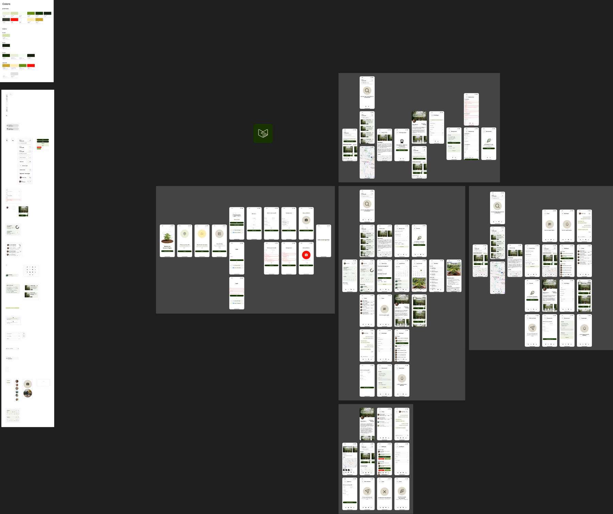

Groene Vingers
Van ongebruikte tuin naar gedeelde groene ruimte, met een MVP dat focust op vertrouwen, duidelijke afspraken en opvolging.
Twee doelgroepen, twee soorten onzekerheid.
Tuinzoeker
Wil tuinieren, maar mist ruimte, toegang en zekerheid over afspraken.
Tuineigenaar
Heeft ruimte, maar wil controle, betrouwbaarheid en overzicht.
De kernwaarde zit in de eerste betrouwbare samenwerking.
High-fidelity prototype met rolgebaseerde flows.

- Tuineigenaar: dashboard, planning, meldingen, profiel en instellingen.
- Tuinzoeker: ontdekken, zoeken, detail, aanvraag en chat.
- Componenten: topnav, botnav, perceelcards, buttons en status indicators.
- Design tokens houden kleur en states consistent.
Een rustig palet dat vertrouwen en actie onderscheidt.
Het prototype simuleert beslissingen, niet alleen schermwissels.
Ontdekken
Cards maken tuinen visueel vergelijkbaar via foto, locatie, rating en voorzieningen.
Beoordelen
Detailpagina bundelt praktische info, beschrijving, locatie en vertrouwen.
Aanvragen
Motivatie, dagen en startdatum zetten interesse om in duidelijke afspraken.
Opvolgen
Owner dashboard, notificaties en chat maken de samenwerking beheersbaar.
Licht aangescherpt, met behoud van de oorspronkelijke Figma.
Componentconsistentie
Herbruikbare navigatie, buttons, cards en profiel/statuscomponenten.
Rolflows
Duidelijker onderscheid tussen tuinzoeker, tuineigenaar en actieve samenwerking.
Aanvraagstructuur
Het formulier stuurt aan op concrete verwachtingen en minder losse communicatie.
Opvolging
Meldingen, planning en chat ondersteunen de samenwerking na de aanvraag.
Toon alleen de kernjourney.
"Ik toon hoe een tuinzoeker van interesse naar een concrete aanvraag gaat, en hoe de eigenaar daarna controle en overzicht behoudt."
- Dashboard: ontdek tuinen in de buurt.
- Detail: bouw vertrouwen op.
- Aanvraag: maak verwachtingen expliciet.
- Owner view: beslis en volg op.
Dezelfde journey bestaat ook technisch in de app.
Expo Router
Dynamische routes zoals garden detail, aanvraag en chat.
Supabase
Auth, gardens, requests, conversations en messages.
Zod
Validatie voor motivatie, samenwerkingstype, dagen en startdatum.
Tamagui
Design system vertaald naar herbruikbare UI-componenten.
Groene Vingers bewijst het kleinste waardevolle moment.
Niet zoveel mogelijk features, maar een betrouwbare eerste samenwerking.
Dat is de reden waarom het MVP focust op ontdekken, aanvragen, beslissen en opvolgen.